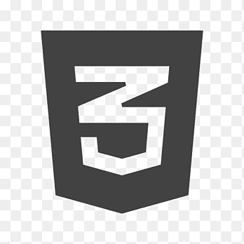

Brayan Herrera
Ingenierio Electronico
Universidad ECCI
Leader de IT
Soy un graduado de ingenieria electronica actualmente laboro como Lider de IT en la empresa de Teleperformance con intereses en aprender sobre todo tipo de desarrallo empezando con desarrollo front end y back end, oportunidad que tengo gracias al curso de Talento Tech para aprender los temas necesarios como HTML Y CSS
Mis intereses
- Aprender programacion en python
- Aprender desarollo web HTML y CSS
- Aprender sobre hacking
- aprender sobre IA y internet de las cosas
- Soporte y mantenimiento de endpoins
- programacion de python
- Liderazgo y trabajo en equipo
- Ingenieria de sistemas windows 10 y 11
Habilidades

